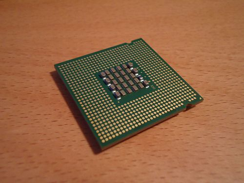
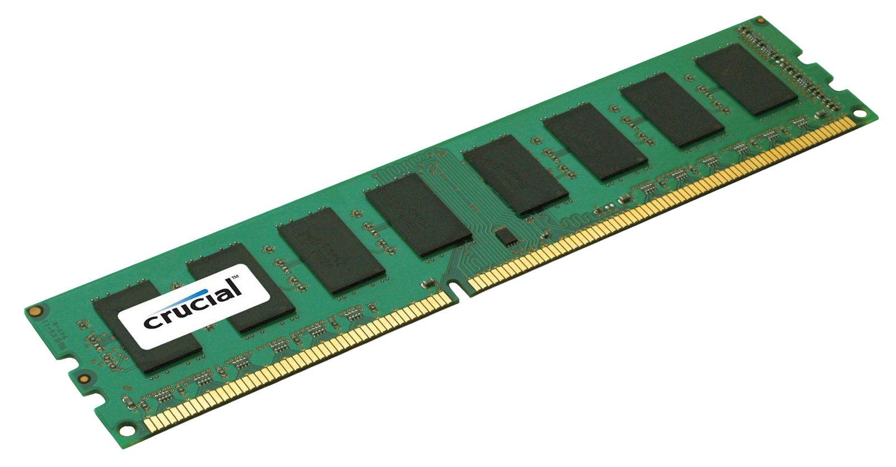
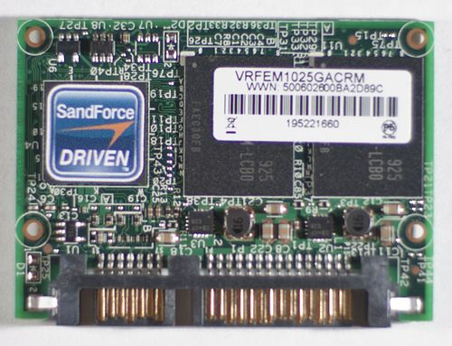

PC-komponenter
Hovedkort
Hovedkort er det viktigste kretskortet i en datamaskin. Alle større komponenter i datamaskinen må kobles til hovedkortet.
Den viktigste enheten som kobles til er prosessoren. Andre typer komponenter kan være minne, skjermkort, lydkort, USBkontroller,
harddiskkontroller, osv., etter som maskinvare utvikles. På hovedkortet finnes BIOS-en som er ansvarlig for oppstart av
datamaskinen, og generell konfigurasjon maskinvaresmessig.

CPU
En CPU, også kalt prosessor, er hovedregne-/prosesseringsenheten i en datamaskin som utfører instruksjonene gitt i et
dataprogram, og den er det primære elementet som gjennomfører datamaskinens funksjoner. Prosessoren har typisk to logiske
bestanddeler: styreenheten og utførelsesenheten. CPU har overordnet ansvar for alt som skal utføres, og delegerer eventuelt
oppgaver til andre enheter. Primærlageret inneholder data som skal bearbeides, samt de programmene som for øyeblikket trenger
å være hurtig tilgjengelig for prosessoren.

RAM
RAM er en type lagringsplass brukt i datamaskiner, som gir tilgang til alle de lagrede dataene i vilkårlig
rekkefølge. Andre lagringsmedier (slik som magnetisk tape eller harddisk) kan i motsetning til RAM bare aksessere data i
forhåndsbestemt rekkefølge på grunn av det mekaniske designet. Betegnelsen RAM brukes oftest om hovedhukommelse eller
hovedminnet. Dette er den delen av minnet i en datamaskin der prosesser ligger klare for kjøring av et program/prosess i
maskinen.

SSD
SSD er et lagringsmedium som benytter flashminne istedenfor mekanisk/magnetiske plater til å lagre data.
Siden den ikke har bevegelige deler, er søketiden raskere enn for en mekanisk harddisk og tåler bedre støt enn vanlige
harddisker. SSD støyer minimalt. De er per i dag (2016) fortsatt dyrere per byte enn tradisjonelle harddisker, men prisen har
falt gradvis de siste årene. En Samsung 500 GB 850 evo koster i 2016 rundt 1500 kr, sammenliknet med 830-modellen som kostet
det dobbelte da den ble lansert.Grunnen til at prisen faller er at det brukes 3 celler slik at ting lagres 3-dimensjonalt, som
gjør det mulig å produsere mindre SSD og få mer plass per tomme.

Input/Output
Mus
Det finnes i dag en rekke forskjellige trådløse mus som benytter seg av radiobølger, f.eks. Bluetooth eller proprietære
protokoller, for å kommunisere med computeren. De fleste mus har i dag to knapper samt et hjul som kan brukes til flytte
skjermbildet opp eller ned. Apple har siden 1984 insistert på at kun én museknapp skulle være på deres datamus, og holdt fast
på denne politikken fram til 2005 da firmaet lanserte multifunksjonsmusen «Mighty Mouse».
Tastatur
Et tastatur er et redskap som brukes for å taste ned tekst. Et tastatur finnes på en skrivemaskin, det kan være koblet til en
datamaskin, eller man har tastatur på en skjerm, som for eksempel er tilfelle med nettbrett. Tastatur finnes i mange
språkvarianter og med ulik plassering av tastene. De finnes også i forskjellige tekniske utførelser til forskjellige typer
datamaskiner, som PC, Macintosh og andre varianter.
Skjerm
En skjerm eller også bildeskjerm er et apparat som fremstiller visuell informasjon på en flate. Informasjonen overføres til
skjermen i form av elektroniske signaler. Eksempler på slike skjermer er fjernsyns- og dataskjermer. Det finnes elektroniske
skjermer i en mengde forskjellige størrelser og teknologiske konstruksjoner, alt fra bilderør med skjermer av glass til
flatskjermer beregnet for digitale TV-signaler, monokrome radarskjermer, små displayer på mobiltelefoner og lommeregnere og
projektorer som viser informasjonen på et lerret.
Nettverk
Internettet har etter hvert fått en altomfattende anvendelse og ble i løpet av 1990-tallet et viktig hjelpemiddel for
informasjonsspredning, kommunikasjon, handel, og forvaltning. Internett ble tatt i bruk i akademiske miljøer tidlig på
1980-tallet, men etter at World Wide Web ble oppfunnet i 1991 og Microsoft la ved en nettleser for Web i Windows i 1995,
fikk nettet en eksplosiv økning i trafikk og utbredelse og er fortsatt i vekst. Stadig flere anvendelser kommer til ved bruk
og behandling av informasjon.